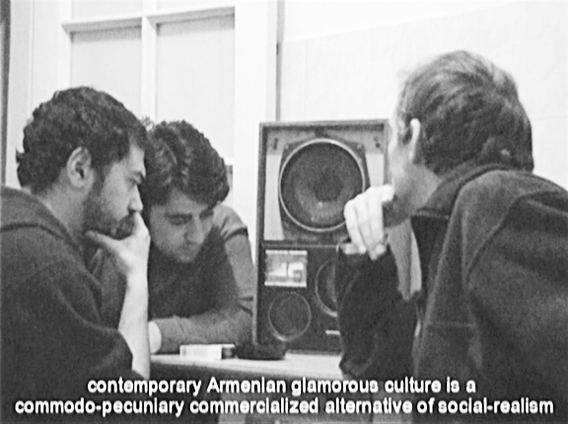

В АРМЕНИИ МНОГО СМЕЛЫХ ЖУРНАЛИСТОВ
В Армении много смелых журналистов. И чем более массово средство информации, тем храбрее ее сотрудник. То есть самые крутые здесь работают на телевидении. Представляете, сколько смелости нужно, чтобы в эфире армянского ТВ в пух и прах разносить политику руководства Азербайджана и Турции, разоблачать деятельность религиозных организаций, сыпать оскорблениями в адрес представителей ЛГБТ-сообщества. Никто не одернет журналиста за публичное преступное хамство: ни сосед-гей, ни коллега-азербайджанец, ни друг-турок, ни брат-мормон. Вся «корректность и профессиональная этика» армянского журналиста ушла на пресс-релизы, президента, армию, церковь, образование, суды и так далее.
На прошлой неделе армянские интернет ресурсы перепостили от бакинских коллег трагическую новость о самоубийстве 24-летнего азербайджанского солдата Вюгара Джафарова. Отмечалось, что тело «было обнаружено в городе Гандзак». Слышали о таком? Это второй по величине город в Азербайджане. Сейчас он – Гянджа, но смерть азербайджанского юноши послужила очередным поводом преподать урок истории несмышленым кочевым соседям.
Этот город поменял не одно название прежде, чем приобрел нынешнее. Он назывался Кировабадом, когда я там родился, но ни я, ни люди постарше не припомнят, чтобы местные армяне или азербайджанцы протестовали против советского топонима. Массовых акций протеста не вызывал и Елизаветполь в составе Российской империи. Митингов в Кировакане, ратовавших за переименование в Ванадзор, тоже не было. Честолюбивые гюмрийцы не атаковали партийных деятелей, военных и других представителей власти с требованием избавить их от названия Ленинакан.
Наконечник войны топонимов, пропаганда ненависти и насилия никогда не были так остро направлены на империи, в составе которых периодически находились армянские и азербайджанские общества. Вся злость до сих пор уходит на соседей со схожей судьбой: изгои не склонны любить других отверженных, им больше нравится любить хозяев. Или на худой конец – себя.
Сейчас я живу в Армении. Если кто не слышал, ее называют Западным Азербайджаном со столицей в Ираванском ханстве. Глава моей страны периодически встречается и часами за закрытыми дверями общается с коллегой из контролируемого врагами Атрпатакана со столицей Бакуракертом. После этих бесед они ругаются в адрес друг друга и угрожают, в том числе и мне.
Юрий М.
09-10-13
epress.am
Фото: Arman Grigoryan, DVD REVOLUTION, Manifest inicjatjwj artistow, video, 2008
На прошлой неделе армянские интернет ресурсы перепостили от бакинских коллег трагическую новость о самоубийстве 24-летнего азербайджанского солдата Вюгара Джафарова. Отмечалось, что тело «было обнаружено в городе Гандзак». Слышали о таком? Это второй по величине город в Азербайджане. Сейчас он – Гянджа, но смерть азербайджанского юноши послужила очередным поводом преподать урок истории несмышленым кочевым соседям.
Этот город поменял не одно название прежде, чем приобрел нынешнее. Он назывался Кировабадом, когда я там родился, но ни я, ни люди постарше не припомнят, чтобы местные армяне или азербайджанцы протестовали против советского топонима. Массовых акций протеста не вызывал и Елизаветполь в составе Российской империи. Митингов в Кировакане, ратовавших за переименование в Ванадзор, тоже не было. Честолюбивые гюмрийцы не атаковали партийных деятелей, военных и других представителей власти с требованием избавить их от названия Ленинакан.
Наконечник войны топонимов, пропаганда ненависти и насилия никогда не были так остро направлены на империи, в составе которых периодически находились армянские и азербайджанские общества. Вся злость до сих пор уходит на соседей со схожей судьбой: изгои не склонны любить других отверженных, им больше нравится любить хозяев. Или на худой конец – себя.
Сейчас я живу в Армении. Если кто не слышал, ее называют Западным Азербайджаном со столицей в Ираванском ханстве. Глава моей страны периодически встречается и часами за закрытыми дверями общается с коллегой из контролируемого врагами Атрпатакана со столицей Бакуракертом. После этих бесед они ругаются в адрес друг друга и угрожают, в том числе и мне.
Юрий М.
09-10-13
epress.am
Фото: Arman Grigoryan, DVD REVOLUTION, Manifest inicjatjwj artistow, video, 2008